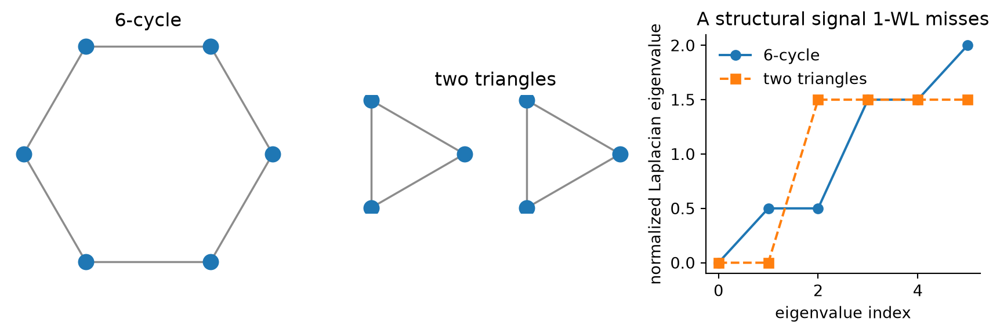
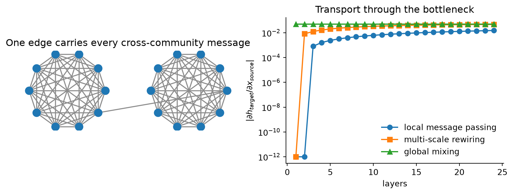

Expressivity and long-range communication are different graph-learning problems, and global attention fixes only one of them.
Author
Diego Filippo Marino
Published
August 14, 2026
A graph neural network can fail before optimization begins. Two nodes may be impossible for the architecture to distinguish. Alternatively, the nodes may be distinguishable in principle, but relevant information may be compressed through a narrow graph bottleneck before it reaches them.
These are not the same failure.
The first is an expressivity problem. It asks whether the architecture maps distinct graph structures to distinct representations. The second is a communication problem. It asks how a signal travels over the graph and how much of it survives aggregation.
Global attention shortens communication paths. It does not automatically create structural identity. Positional and structural encodings can break symmetries. They do not automatically create an efficient route for distant signals. Modern graph transformers work because they combine both remedies, often with an ordinary message-passing layer that preserves local edge structure.
The doubled braces denote a multiset. Permuting the neighbors cannot change the aggregate, so \operatorname{AGG}^{(\ell)} must be a function on multisets rather than on ordered tuples. This is the correct symmetry for an unlabeled graph, and it imposes an information constraint: whatever Equation 1 cannot separate at layer \ell stays merged at every later layer.
Xu et al. showed that neighborhood-aggregation GNNs are at most as discriminative as the one-dimensional Weisfeiler-Lehman test, usually called 1-WL (Xu et al. 2019). A model reaches that bound only when its aggregation and readout are injective over multisets. Sum aggregation can be injective under suitable conditions. Mean and max discard multiplicity information.
Failure one: indistinguishable structures
The 1-WL test repeatedly hashes each node’s current color together with the multiset of neighbor colors. Begin with identical colors on a 6-cycle and on two disconnected triangles. Every node has degree two, and every node sees two neighbors of its own color at every round. The color histograms remain identical forever.
import numpy as npimport matplotlib.pyplot as pltdef adjacency(n, edges): A = np.zeros((n, n), dtype=float)for i, j in edges: A[i, j] = A[j, i] =1return Acycle_edges = [(i, (i +1) %6) for i inrange(6)]tri_edges = [(0, 1), (1, 2), (2, 0), (3, 4), (4, 5), (5, 3)]A_cycle = adjacency(6, cycle_edges)A_tri = adjacency(6, tri_edges)def wl_histograms(A, rounds=4): colors = np.zeros(len(A), dtype=int) hist = []for _ inrange(rounds +1): _, counts = np.unique(colors, return_counts=True) hist.append(tuple(sorted(counts))) signatures = []for v inrange(len(A)): neighbor_colors =tuple(sorted(colors[A[v] >0])) signatures.append((int(colors[v]), neighbor_colors)) unique = {signature: i for i, signature inenumerate(sorted(set(signatures)))} colors = np.array([unique[s] for s in signatures])return histassert wl_histograms(A_cycle) == wl_histograms(A_tri)def normalized_laplacian_spectrum(A): degree = A.sum(axis=1) D_inv_sqrt = np.diag(1/ np.sqrt(np.maximum(degree, 1))) L = np.eye(len(A)) - D_inv_sqrt @ A @ D_inv_sqrtreturn np.linalg.eigvalsh(L)spec_cycle = normalized_laplacian_spectrum(A_cycle)spec_tri = normalized_laplacian_spectrum(A_tri)def draw_graph(ax, A, positions, title):for i inrange(len(A)):for j inrange(i +1, len(A)):if A[i, j]: ax.plot([positions[i, 0], positions[j, 0]], [positions[i, 1], positions[j, 1]], color="0.55", lw=1.3) ax.scatter(positions[:, 0], positions[:, 1], s=90, zorder=3) ax.set_title(title) ax.set_aspect("equal") ax.axis("off")angles = np.linspace(0, 2* np.pi, 6, endpoint=False)pos_cycle = np.c_[np.cos(angles), np.sin(angles)]tri = np.c_[np.cos(angles[:3] *2), np.sin(angles[:3] *2)]pos_tri = np.vstack([tri + [-1.25, 0], tri + [1.25, 0]])fig, axes = plt.subplots(1, 3, figsize=(9, 3.1))draw_graph(axes[0], A_cycle, pos_cycle, "6-cycle")draw_graph(axes[1], A_tri, pos_tri, "two triangles")x = np.arange(6)axes[2].plot(x, spec_cycle, "o-", label="6-cycle")axes[2].plot(x, spec_tri, "s--", label="two triangles")axes[2].set(xlabel="eigenvalue index", ylabel="normalized Laplacian eigenvalue", title="A structural signal 1-WL misses")axes[2].legend(frameon=False)axes[2].spines[["top", "right"]].set_visible(False)plt.tight_layout()plt.show()

Figure 1: A 6-cycle and two disjoint triangles remain identical to 1-WL from uniform node features, although their normalized Laplacian spectra and connectivity differ.
Laplacian eigenvalues distinguish these graphs immediately. Supplying eigenvectors or random-walk statistics to a model can therefore break symmetries that local color refinement cannot. This is the motivation for positional and structural encodings in graph transformers.
There is an important caveat. Eigenvectors have sign ambiguities, and repeated eigenvalues permit rotations within an eigenspace. A model that consumes them naively may depend on an arbitrary basis. Sign-invariant networks, eigenspace-aware constructions, and random-walk encodings address different parts of this problem.
Failure two: distant signals are over-squashed
After L message-passing layers, node v can depend only on its L-hop neighborhood. Expanding the depth increases the receptive field, but the number of distant nodes can grow exponentially while the hidden vector keeps fixed width. Many signals must be compressed into one representation.
For a linearized mean-aggregation network,
H^{(L)}=P^L X,
\tag{2}
where P is a normalized adjacency matrix with self-loops. The sensitivity of target v to source u is
On graphs with narrow cuts, a large amount of dependency must pass through very few edges. Alon and Yahav connected this bottleneck to the difficulty of long-range graph tasks (Alon and Yahav 2021). Later work related over-squashing to graph curvature and rewiring (Topping et al. 2022).
Consider two dense communities connected by one bridge. The source and target are structurally distinguishable. Communication is still poor.
def barbell(clique_size=10): n =2* clique_size edges = []for offset in [0, clique_size]:for i inrange(offset, offset + clique_size):for j inrange(i +1, offset + clique_size): edges.append((i, j)) edges.append((clique_size -1, clique_size))return adjacency(n, edges)def propagation(A): A_loop = A + np.eye(len(A))return A_loop / A_loop.sum(axis=1, keepdims=True)A_local = barbell(10)A_rewired = A_local.copy()for i, j in [(0, 10), (2, 12), (4, 14), (6, 16), (8, 18)]: A_rewired[i, j] = A_rewired[j, i] =1P_local = propagation(A_local)P_rewired = propagation(A_rewired)P_global = np.ones_like(A_local) /len(A_local)depths = np.arange(1, 25)source, target =0, 19def influence_curve(P): power = np.eye(len(P)) values = []for _ in depths: power = P @ power values.append(abs(power[target, source]))return np.array(values)fig, axes = plt.subplots(1, 2, figsize=(8.8, 3.5))# Compact drawing of the graph and its cut.theta = np.linspace(0, 2* np.pi, 10, endpoint=False)positions = np.vstack([ np.c_[0.72* np.cos(theta) -1.15, 0.72* np.sin(theta)], np.c_[0.72* np.cos(theta) +1.15, 0.72* np.sin(theta)],])draw_graph(axes[0], A_local, positions, "One edge carries every cross-community message")axes[1].semilogy(depths, np.maximum(influence_curve(P_local), 1e-12), "o-", label="local message passing")axes[1].semilogy(depths, np.maximum(influence_curve(P_rewired), 1e-12), "s-", label="multi-scale rewiring")axes[1].semilogy(depths, influence_curve(P_global), "^-", label="global mixing")axes[1].set(xlabel="layers", ylabel="$|\\partial h_{target}/\\partial x_{source}|$", title="Transport through the bottleneck")axes[1].legend(frameon=False)axes[1].spines[["top", "right"]].set_visible(False)plt.tight_layout()plt.show()

Figure 2: Linearized source-to-target influence across a two-community bottleneck. Multi-scale rewiring and a global mixing channel reduce graph distance, but they solve communication rather than structural identity.
Global mixing creates an immediate path. Rewiring creates several shorter paths. Neither operation tells two initially identical regular structures apart unless it also introduces asymmetric structural information.
A two-axis diagnostic
The preceding examples define a useful matrix for architecture design.
Communication easy
Communication hard
Structures distinguishable
ordinary local GNN may suffice
add long-range edges, hierarchy, or global attention
Structures indistinguishable
add positional or structural encodings
add encodings and a communication mechanism
This table prevents a common category error. Increasing depth addresses graph distance but can worsen over-smoothing and over-squashing. Adding a virtual node or full attention addresses distance but leaves permutation symmetry intact. Adding a Laplacian encoding addresses symmetry but does not guarantee that a remote feature reaches the decision node without distortion.
The components are not redundant (Rampasek et al. 2022). Encodings give nodes a structurally meaningful coordinate system. Local message passing consumes real edge features and preserves the inductive bias of the input graph. Global attention provides short communication paths. Linear attention variants can keep the global branch near O(|V|+|E|) rather than O(|V|^2).
The design is consistent with the broader geometric deep-learning blueprint: identify the symmetry group, build equivariant layers, and add invariant readout only where the task requires it (Bronstein et al. 2021). Graph attention without structural inputs is permutation equivariant over a set of nodes. That symmetry is necessary but too weak to recover all graph structure on its own.
Multi-scale edges are a physical design choice
GraphCast offers a useful example outside graph benchmarks. It maps weather fields to an icosahedral mesh whose edge set is the union of several resolutions. Fine edges handle local dynamics. Coarse edges move information across the globe in few message-passing steps (Lam et al. 2023). The hierarchy is flattened into a multi-mesh, so long and short spatial scales coexist in each processor stack.
This can be read as deliberate anti-over-squashing. The architecture changes the communication graph to match the dependency graph of atmospheric dynamics.
GenCast retains the mesh construction but uses a graph-transformer processor inside a conditional diffusion model, producing calibrated ensembles rather than a deterministic mean forecast (Price et al. 2025). This connects three parts of the wiki that are usually discussed separately: graph geometry determines communication, diffusion represents forecast uncertainty, and autoregressive rollout determines how errors compound in time.
Expressivity is not usefulness
Matching 1-WL is an upper bound within a model class, not a guarantee of good generalization. A maximally expressive aggregator can fit irrelevant distinctions. Positional encodings can leak graph size or dataset-specific regularities. Global attention can overfit spurious long-range correlations. More distinguishability and more communication are capacities, not objectives.
There are also graph pairs that 1-WL cannot distinguish but Laplacian spectra cannot distinguish either. Cospectral graphs exist. Higher-order WL methods, subgraph GNNs, and richer invariant features push the boundary at greater cost. No single positional encoding is a universal graph identity card.
Likewise, Equation 3 describes a linearized mean aggregator. Nonlinear gates and attention can route information selectively, and residual connections change the dynamics. The bottleneck remains a useful warning, not a complete theory of trainability.
A better architecture question
Instead of asking whether attention is better than message passing, ask two questions about the task:
Which graph symmetries should the prediction respect, and what distinct structures must the model identify?
Which distant variables must communicate, through how many independent channels, and at what spatial scales?
The first question chooses invariants and encodings. The second chooses edges, hierarchy, state width, and global mixing. A graph transformer becomes convincing when its answer to both is explicit. Otherwise, global attention is only an expensive way to make every node adjacent to every other node.
Related reading
The Rank of Memory makes the bottleneck argument algebraic for sequences.
Alon, Uri, and Eran Yahav. 2021. “On the Bottleneck of Graph Neural Networks and Its Practical Implications.”International Conference on Learning Representations. https://arxiv.org/abs/2006.05205.
Bronstein, Michael M., Joan Bruna, Taco Cohen, and Petar Velickovic. 2021. “Geometric Deep Learning: Grids, Groups, Graphs, Geodesics, and Gauges.”arXiv Preprint arXiv:2104.13478. https://arxiv.org/abs/2104.13478.
Lam, Remi, Alvaro Sanchez-Gonzalez, Matthew Willson, et al. 2023. “Learning Skillful Medium-Range Global Weather Forecasting.”Science 382 (6677): 1416–21. https://doi.org/10.1126/science.adi2336.
Price, Ilan, Alvaro Sanchez-Gonzalez, Ferran Alet, et al. 2025. “Probabilistic Weather Forecasting with Machine Learning.”Nature 637: 84–90. https://arxiv.org/abs/2312.15796.
Rampasek, Ladislav, Mikhail Galkin, Vijay Prakash Dwivedi, Anh Tuan Luu, Guy Wolf, and Dominique Beaini. 2022. “Recipe for a General, Powerful, Scalable Graph Transformer.”Advances in Neural Information Processing Systems. https://arxiv.org/abs/2205.12454.
Topping, Jake, Francesco Di Giovanni, Benjamin Paul Chamberlain, Xiaowen Dong, and Michael M. Bronstein. 2022. “Understanding over-Squashing and Bottlenecks on Graphs via Curvature.”International Conference on Learning Representations. https://arxiv.org/abs/2111.14522.
Xu, Keyulu, Weihua Hu, Jure Leskovec, and Stefanie Jegelka. 2019. “How Powerful Are Graph Neural Networks?”International Conference on Learning Representations. https://arxiv.org/abs/1810.00826.
Citation
BibTeX citation:
@online{marino2026,
author = {Marino, Diego Filippo},
title = {Graph {Networks} {Fail} on {Two} {Axes}},
date = {2026-08-14},
url = {https://diegofilippomarino.github.io/Eigenholm/posts/graph-networks-two-failures/},
langid = {en}
}